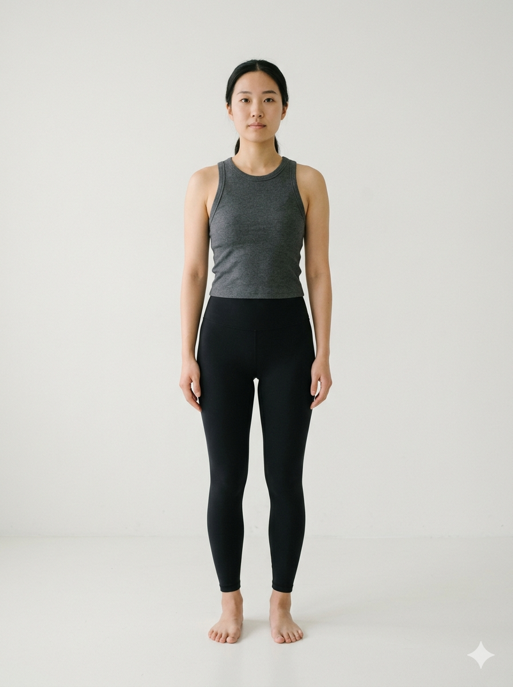
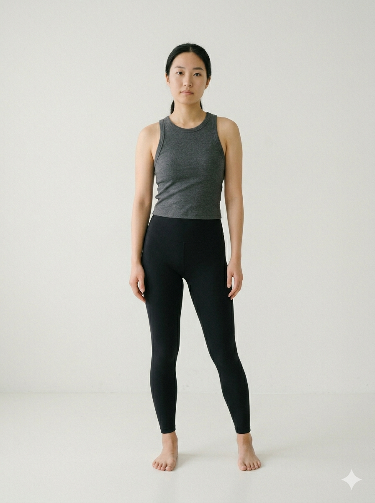
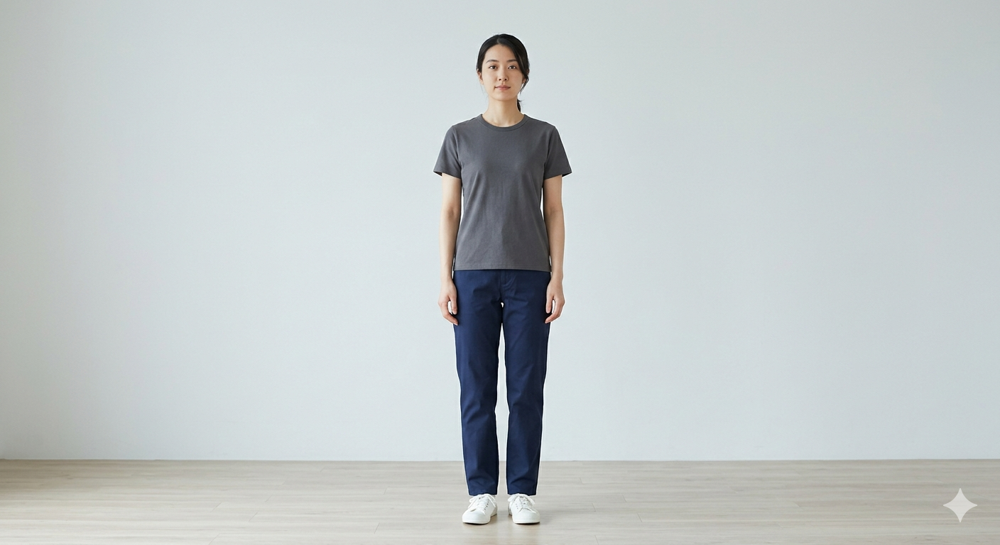

テストモードについて
このページは開発・動作確認用です。LINEログインや院内システムへの保存は行いません。
- カメラ起動 → 撮影 → MediaPipe 解析 → スコア表示までを検証
- サンプル画像（3枚）でも即座に解析を試せます
- 解析結果はブラウザ内のみ、どこにも送信されません

サンプル①
サンプル②
サンプル③ 横向き（側面）
横向き（側面）
LIFF / GAS を介さずカメラ＋AI解析だけを試せるスタンドアロン版です。
このページは開発・動作確認用です。LINEログインや院内システムへの保存は行いません。

サンプル①
サンプル②
サンプル③
横向き（側面）